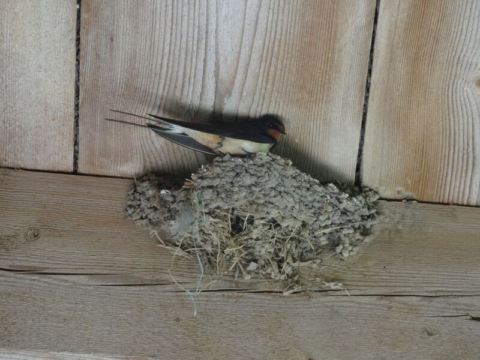

生命5–11 岁本地观察
迁徙观察站
有的鸟秋天往南飞，同城的麻雀却整年留下：走是为了赶上食物或繁殖更好的窗口，不是去旅行，更不是「想家」。路上要花掉大量脂肪当路费，认路可以同时用太阳、星空、地磁、河流山脉，以及跟着有经验的同伴。鲑鱼回河更靠小时候记住的水味，和候鸟不是同一套。本页练「走和留都是办法」。因为追拍会惊飞、烧掉路费，夜里大楼亮灯会让候鸟把玻璃当成天空，所以不追、关灯、贴画。舞台上的「续航」数字只是比较尺子，用来比「脂够不够、每天飞得够不够」，不是航程表，更不是迁徙预报。

一个走，一个留


两边都空着。先点一只会走的，再点一只留下的。
迁徙续航台 · 真参数
调体脂储量与日飞距离。走是为了食物/繁殖窗口；脂够、每天推进够，才更容易抵达。留鸟是另一条策略。
脂肪是路费。地上那只留下，拆掉「鸟都要走」。
先猜一猜，再拖滑杆
第 1 题：体脂够、日飞够（体脂 30、日飞 16），续航会更明显吗？
先押一个，再拖到 体脂储量 30、日飞距离 16。
第 2 题：体脂 6、日飞 4，还容易抵达吗？
押好后拖到 体脂储量 6、日飞距离 4。
第 3 题：体脂最少 4、日飞最弱 2。还能明显容易抵达吗？
押好后体脂 4、日飞 2。
先问为什么走，再问路上靠什么认
先点一只候鸟，再对照留鸟麻雀。迁徙是跟着季节搬家：繁殖地和觅食地轮流更合适，路上要花掉大量脂肪。它不是去旅行，也不是童话里的「想家」。认路可以同时用太阳、星空、地磁、河流山脉，以及跟着有经验的同伴。
同城的麻雀常常整年不走，因为这里一年都能找到碎粒和草籽。留下也是一种本领，不能用候鸟的标准骂它懒。鲑鱼回河更靠小时候记住的水味，和候鸟看太阳、看星星不是同一套。
因为追拍会惊飞、烧掉路费，夜里大楼亮灯会让候鸟把玻璃当成天空，所以不追、关灯、贴画。舞台上的「续航」读数只比较「脂够不够、每天飞得够不够」，不是航程表，更不是迁徙预报。
迁徙图鉴
下面有 12 张卡。前 7 张会走，最后一张麻雀是留鸟。点一只走的，再点麻雀，再说它为什么要走。
还没选。先点一只会走的，再点麻雀。
猜一猜
有的鸟冬天飞走、有的留在原地，主要在比什么？
先押一个，再点「看答案」。
任务：一只走，一只留，说出为什么走
先点一只迁徙的动物，再点留鸟麻雀。然后选出走的那只为什么要离开。选好以后点「记下这次比较」。
走的那只要离开，是因为
开放式提示不会代替上面的正式任务。
尚未完成：先点一只会走的，再点一只留下的。
为什么走，路上靠什么认
同一季、同一座城，只看它走还是留。先问：它要去的地方，这一季是不是更好找吃的或更好带孩子。再问：太阳、河流、同伴，它用了哪几样。这样比，才知道走不是去旅行，留下也不是懒。
完成句写「换地方找吃的」或「认路不靠一种」。禁止「它们喜欢旅行」，也禁止「动物都会迁徙」。因为追拍会惊飞、烧掉脂肪路费，所以看见鸟群就停住，不要跟着跑。
走是为了赶上繁殖或觅食更好的窗口，不是去旅行，更不是想家口号。

飞或游之前先把脂肪存够，路费不够就到不了；追着拍惊飞等于白烧一笔。

太阳是一把尺子，阴天还能用星空和地磁，认路不靠藏宝图，也不是想家。
冬天还在的麻雀拆掉「鸟都要飞南边」这句故事；留下是因为这里一年能吃到。

鲑鱼回河更靠闻水的味道，不能写成和候鸟同一套罗盘，也不是想家。
追拍会惊飞烧掉路费，夜里大楼亮灯也会让候鸟把玻璃当成天空路。
- 点候鸟。看它是不是换季节换地方。
- 点留鸟。同城麻雀走了没有。
- 点鲑鱼。认路是水味还是太阳。
- 写下不是旅行。理由里要有吃的或带孩子。
有的鸟冬天飞到暖和的地方找吃的，春天再回来带孩子。不是去玩。
迁徙由能量和繁殖窗口驱动。导航是多线索：太阳、星、磁、地标、跟同伴。留鸟证明「不是所有动物都走」。
地磁感应和太阳罗盘可以同时校准。光污染打乱夜迁。本页不要求背某条航线的公里数。
这在教什么：孩子要能分开候鸟、留鸟和鲑鱼洄游，并否定「动物都会迁徙」和「它们去旅行」。完成看的是走留对照，不是背航线公里数。
- 本页比的是纸秋天南飞是为了赶上食物窗口，还是麻雀那种整年留下？
- 鲑鱼认路最靠什么？能写成和候鸟同一套吗？
- 追着拍会怎样？烧掉的是哪一笔路费？
- 阴天没有太阳，候鸟还可以用哪两样？
多罗盘，以及大楼灯光
一种线索坏了，别的还能补。阴天太阳罗盘弱，地磁和地标还能用。把认路说成「口袋里有一张藏宝图」，会漏掉这种备份。迁徙也不是童话里的「想家」：它要赶上窗口，还要带够路费。
幼鸟有的要跟成鸟学第一条路，有的出生后第一次就走。本页不把所有物种写成同一种上学方式。帝王蝶好几代接力，一只蝶飞不完全程，更不能写成「它记得回家的路」。
夜间玻璃幕墙又亮又像天空，候鸟会撞上去。关灯、拉窗帘、贴画，比事后「它自己飞歪了」有用。追拍让鸟群提前起飞，等于逼它们多花一笔路费。
本页「续航」读数只比较脂肪和日飞，不是精确航程表。看候鸟请走现成小路，用望远镜，不要投喂、不要摸巢。
认路不止一把尺子，太阳坏了还有星空、地磁和地标，不是一张藏宝图。
有的种类要跟着长辈飞才认得路，不是每只都自己摸，也不是同一种上学。
夜里关灯、玻璃贴上警示画，能少一点假天空，比事后说「它飞歪了」更有用。
惊飞等于白烧脂肪，照片换不回路费，所以看见就停住，不要拦路投喂。
对照：候鸟长途 · 留鸟本地 · 鲑鱼洄游
三列都在「动还是不动」，零件和线索不同。公平比法是各写「为什么走或留、靠什么认」，不要写成「鸟都要飞南边」。
候鸟：季节性长距离飞，脂肪是路费，认路用太阳、星星、地磁好几把尺子。留鸟：资源全年够用或它换食谱，不必走，不能用候鸟的标准骂它懒。鲑鱼：从海回淡水产卵，水化学和嗅觉权重更高，身体还会改形状。
夜里迁飞会把玻璃楼当成天空，容易撞上。不要追着拍。本页读数只比较方向，不是航程说明书。
候鸟飞很远，认路用太阳、星星、地磁和沿途地标好几把尺子，不是去旅行。
留鸟不走，是因为这里一年都能找到吃的，不是懒得飞，也不该被骂懒。
鲑鱼回河更靠闻小时候记住的水味道，不是靠看星星，也不是童话想家。
脂肪是路费，走之前先在身上存够；追拍惊飞等于白烧一笔，停歇地别投喂。
夜里迁飞会把玻璃楼当成天空，容易撞上；关灯贴画能少一点假天空。
不要追着拍，一惊飞就把路费烧掉了；路费留给它们飞，沿途也不投喂。
谁走、谁留、靠什么认
在纸上画三行：候鸟走、留鸟留、鲑鱼回河。认路各写一种线索。把「去旅行」划掉，改成赶上窗口、带够路费。口头只要两句：「走是换窗口，不是想家。」「冬天还在的麻雀，拆掉鸟都要飞南边。」
家里可做：夜里哪扇窗对着天空，要不要拉帘。本页数字不要抄进航程表。
复述：看见鸟群，停住，不要跟着跑。走现成小路，用望远镜，不要投喂、不要摸巢。
候鸟走、留鸟留、鲑鱼回河，认路线索分开写，不要并成一句「大家都想家」。
把「去旅行」和「想家」都划掉，改写成赶上窗口、带够路费、保护沿途停歇地。
夜里对着天空的窗拉上帘，少一点假天空，候鸟就不那么容易把玻璃当路。
看见鸟群就停住，路费留给它们飞，不要跟着跑去拍，也不要拦路投喂。
为什么走、怎么认路 · 再挖一层
带走句：迁徙是季节性位移：能量预算与繁殖/觅食窗口驱动；导航可综合太阳、星空、地磁、地标与社会学习。
留鸟证明「不走」也是策略；鲑鱼认路更靠水化学线索，和候鸟的天空线索权重不同。
安全：不追拍惊飞；夜间灯光大厦是鸟类安全话题可点到。
完成标准：能指图鉴结构说出机制，而不是背物种名。
怎样才算公平的一次比较
想知道「它为什么走」，就只改走还是留这一项。同一座城、同一季，先看候鸟换不换地方，再看麻雀留不留下。把「鸟都要飞南边」叠进同一档，分不清到底是窗口，还是童话。
- 只改这一项：走还是留（或认路靠太阳还是靠水味）。
- 先保持不变：同一季、同一座城、同一笔脂肪路费。
- 要观察的：它要去的地方这一季是不是更好找吃的；留下的那个一年有没有吃的。
- 另开一行：鲑鱼回河去鲑鱼页对照，不要和「想家」叠在一起。
还可以问下去
- 阴天没有太阳，候鸟还可以用哪两样？一种线索坏了，备份还在吗？
- 鲑鱼和候鸟都「回家」，认路能写成同一种吗？水味和星星，哪一把尺子更重？
- 大楼整夜亮灯，伤害发生在看见之前还是之后？追拍得到的照片，和鸟群多飞的那一笔脂肪，哪边是本页要算的账？
按年龄分层的讲法
同一个现象，三个年龄段讲到哪一层。建议只讲孩子当前那一层，讲完就停，不要把地磁感应提前塞进四岁耳朵。
有的鸟冬天飞到暖和的地方找吃的，春天再回来带孩子。不是去玩。麻雀常常留下。我们不追着拍。
迁徙由能量和繁殖窗口驱动。导航是多线索：太阳、星、磁、地标、跟同伴。留鸟证明「不是所有动物都走」。鲑鱼认路更靠水味。本页数字只用来比较，不是航程表。
地磁感应和太阳罗盘可以同时校准。光污染打乱夜迁。社会学习因物种而异。本页不要求背某条航线的公里数。
给家长的问题
- 孩子说「鸟都要飞走过冬」，指一只留鸟让他改口。留下是懒，还是这里一年都有吃的？
- 阴天没有太阳，候鸟还可以用哪两样？把认路说成「有一张藏宝图」，漏掉了什么？
- 鲑鱼和候鸟都「回家」，认路能写成同一种吗？水味和星星，哪一把尺子更重？
- 大楼整夜亮灯，伤害发生在看见之前还是之后？关灯、贴画比事后「它飞歪了」差在哪？
- 追拍得到的照片，和鸟群多飞的那一笔脂肪，哪边是本页要算的账？
- 「它们想家所以飞回来」——怎样改成窗口和路费？本页「续航」读数能当航程表吗？
背后的原理
舞台上不写这些词，留给孩子用眼睛看。家长可以指着图讲：迁徙是季节性的、通常往返的位移，由繁殖成功率和能量收支共同筛选。驻留策略在资源稳定时同样成功，所以「动物都会迁徙」为假。走不是旅行，也不是童话里的想家。
导航是多模态的：太阳方位与偏振、星空、地磁场、嗅觉、视觉地标和社会信息。单一「体内地图」叙事会漏掉校准和备份。本页「续航≈体脂×日飞÷20」只是比较尺子，用来让孩子看见「脂够、每天飞得够才到得了」，不是精确航程表，也不是迁徙预报。
溯河鱼类的嗅觉印记与鸟类的视觉/磁罗盘权重不同。对照用来隔离线索，不是用来比谁更聪明。
光污染和惊飞是人为把能量税加在迁徙者身上。观察距离和夜间减灯是可操作的保护，不必编造航线公里数。看候鸟请走现成小路，用望远镜，不要投喂、不要摸巢。
迁徙公式卡 · 续航≈体脂×日飞÷20；续航≥12 更易抵达；走/留都是策略
真实导航还可综合太阳、星空、地磁与地标。本页只示意能量预算方向，不是精确航程表。
接下来可以去
带走句：冬天还在的麻雀，拆掉「鸟都要飞南边」；走的那个靠脂肪当路费，不是去旅行。鲑鱼页看回河靠闻水；四季页看窗口什么时候打开。